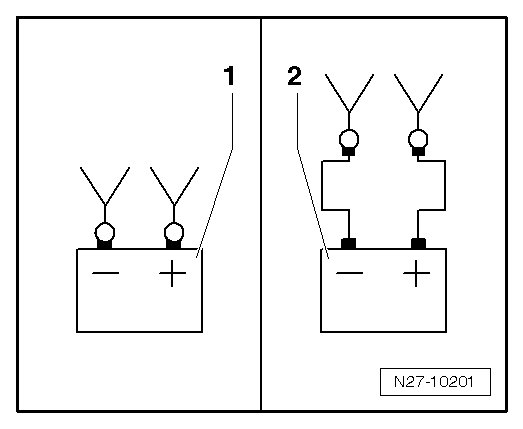
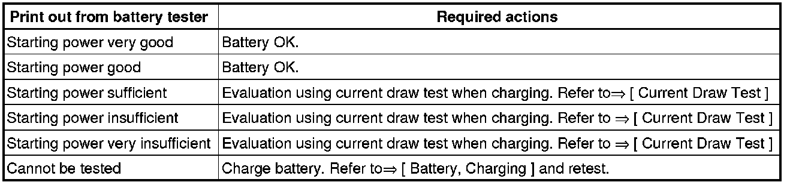
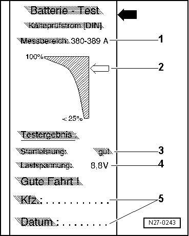

Battery Load Test
Battery Load Test
--> [ Battery Tester with Printer VAS 5097 A ]
--> [ Evaluating Test Results ]
--> [ Explanation of Test Results ]
Battery Tester with Printer VAS 5097 A
CAUTION!
Risk of injury. Observe warning notes and safety precautions. Refer to --> [ Battery Safety Precautions ] Battery Safety Precautions!
Special tools, testers and auxiliary items required
• Battery Tester with Printer 5097 A (VAS 5097 A)
• Note TPL 2012182 for Battery Tester With Printer (VAS 5097 A)
Perform battery load test:
CAUTION!
Batteries that have a colorless or light yellow visual indicator must not be tested or charged. Jump starting must not be used!
There is a risk of explosion during testing, charging or jump starting.
These batteries must be replaced.
• The battery temperature must be at least 10 °C.
- Turn off the ignition and all electrical consumers.
- Check visual indicator on batteries equipped with it. Refer to --> [ Battery with Visual Indicator, Checking ] Battery with Visual Indicator, Checking.
- Determine cold cranking amps according to specifications on battery in ampere (A) according to DIN and determine Battery Tester With Printer (VAS 5097 A) adjustment range using the table. Refer to --> [ Cold Cranking Output ] Cold Cranking Output.
• Should the battery state this value not in DIN, but rather in IEC or EN/SAE, the value should be converted with help of the table. Refer to --> [ Cold Cranking Output ] Cold Cranking Output or the table on the device.
- Select the cold cranking output with the cold cranking output selector switch. Refer to--> [ Battery Tester with Printer VAS 5097 A ] Battery Tester with Printer VAS 5097 A.
- Select the measurement range, 80 - 379 A or 380 - 499 A, with the ON/OFF function switch. Refer to --> [ Battery Tester with Printer VAS 5097 A ] Battery Tester with Printer VAS 5097 A.
• Batteries with cold cranking output greater than 499A according to DIN, for example 520A, 580A or 600A, can be tested for the time being with the setting for 499 A according to DIN.
- Clamp the red clamp "+" of the tester to the positive terminal.
- Clamp the black clamp "-" on the tester to the negative terminal.
• Make sure the test clamps make good contact!
• Note TPL 2012182 for Battery Tester With Printer (VAS 5097 A)
- Select the connection point of the test clamps using the sliding switch. Refer to --> [ Battery Tester with Printer VAS 5097 A ] Battery Tester with Printer VAS 5097 A.

1. Direct connection to battery.
2. Connection to external test points in engine compartment.
- Check if the cold cranking output indicated on the battery matches the selected value on the battery tester.
- Press the start button, refer to--> [ Battery Tester with Printer VAS 5097 A ] Battery Tester with Printer VAS 5097 A.
The green LED lights up, refer to --> [ Battery Tester with Printer VAS 5097 A ] Battery Tester with Printer VAS 5097 A. The test program runs automatically. The test results are output through the printer. Refer to --> [ Evaluating Test Results ]. If the device does not start (no LED comes on, no print-out), battery must be charged --> [ Battery, Charging ]Battery, Charging.
- Switch off the device. Refer to --> [ Battery Tester with Printer VAS 5097 A ] Battery Tester with Printer VAS 5097 A.
- Remove the test clamps.
• The test is over after approximately 20 seconds.
• The results of the test are output through the printer.
• Perform the test only one time. Repeating the test will not produce accurate results.
• The tester takes about 30 min. to cool down in order to be ready for the next measurement.
Evaluating Test Results
By placing the battery under a strong load during the battery load test, the battery voltage will be reduced.
• If the battery is good, the voltage drops only to the specified minimum voltage.
• If the battery is defective or weakly charged, the battery voltage will drop very quickly to below the specified minimum voltage.
• After testing, this low voltage level is maintained for a lengthy period and only increases again slowly.
• Perform the test only one time. Repeating the test will not produce accurate results.
• In order to be able to test another battery, the battery must cool down for about 30 min. to give a correct measuring result.

Explanation of Test Results

1. Measured range selected on device.
2. Diagram, the - arrow - points to the battery status.
3. Test result.
4. Battery voltage during load test.
5. Vehicle data and date. For tester to fill out.
• The printed test results are required for warranty claims.
• Perform the test only one time. Repeating the test will not produce accurate results.